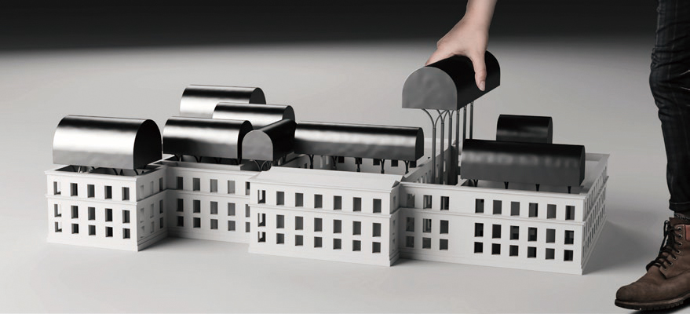

④ The museum and the relics below
Keywords: momumentality, typology, symbolic recovery
[Group Work] Individual
[Tutor] Jianing Zhang, Kun Zhang & Xinyu Cao
[Location] Quinta da Boa Vista, Rio de Janeiro, Brazil
[Time] June, 2019
+Description
On Sep 2, 2018, a catastrophic fire struck Saint Christopher’s Palace, which was operating as the national museum of Brazil at that time. Millions of collections, such as cultural artifacts, scientific literature and language recordings, were burnt to ash. The disaster was described as a leukotomy of Brazilian, which cut a long incision in the history of the country. Worst of all, it was a tragedy of all huamn beings.
In this case, I try to merge the two architure type, barn and water tower, to design a new museum for the reseverd and recovered collections. Moreover, the scarred body of old palace is also considered as an item on display, which can be watched from different levels. The floating and discrete exhibition rooms are to express the fault of memory, and they have symbolically recovered the part of burnt roofs. Without destorying the relics and the surroundings, a silent but monumental view is created above the park.
+Concept
I hope to design some new exhibition rooms floating over the relics as a complement of the devastated roofs, which provide space for the survived collections and keep the burnt palace itself as an exihibit below.
+Typology
I extract and merge two types of architecture, barn and water tower, to design the new museum above. The barn is for a functional analogue and the water tower is to emphasize monumentality.
+Evolution
The floors of the palace were completely burnt in some areas, which makes it possible to insert the barns from above. Also, several adventure paths are set across the relics. It enables the vistors to get closer to the burnt walls and recall the sorrow of the disaster. In the other areas, vegetations are hanged on top of the walls to make the new level afforested.

+Entering
The volumes of new roof form a novel monumental view floating above the park. In order not to destroy the relics, the entrance of museum is arranged underground and the vertical traffic is put inside the courtyard.
+Climbing
① Exploring the relics
② Climbing to the museum
A set of whirly stairs is erected in couryard of the palace, where the visitors can step to the museum above or explore deeper spaces of the relics. As an exhibit of the museum, the relics endows a melancholy power to the new architecture.
+Barn Spaces
③ The exhibition rooms
④ The museum and the relics below
The museum level consists of lobby barn, exhibiton barn and digital-display barn, which respectively serves for reception, collecting the preserved exhibits and recording the missing pieces.
Inside some rooms, the relics can be watched from above, which blends the event and the collections in one space.
+Section